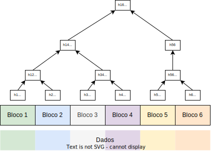
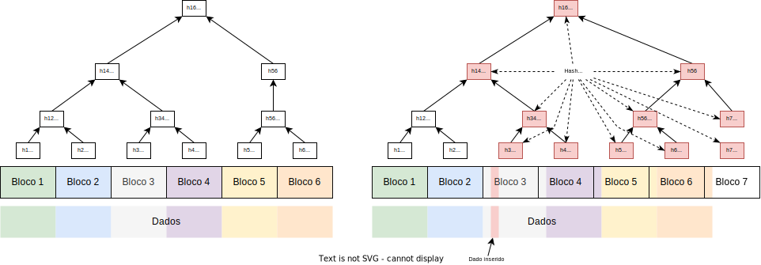

Tecnologias
O objetivo deste capítulo é visitar algumas técnicas e tecnologias recentes e interessantes na área de sistemas distribuídos. Não espere então que as várias seções sejam conexas umas com as outras.
Blockchain
Em uma cadeia de suprimentos (supply chain) temos, em vários níveis, Clientes, Vendedores e Fornecedores, que estabelecem contratos de bens e serviços. As interações multipartido de trocas de bens podem ser registradas em livros razão mantidos independentemente pelos participantes, registrando cada troca de bens envolvendo o participante responsável. Considere o bem "bananas". Assim, o produtor registra quantas carretas de bananas vendeu e o atravessador quantas comprou, ainda na roça. O atravessador registra quantas carretas vendeu para o exportador e o exportador quantas comprou, no porto. O exportador registra quantas toneladas exportou e o importador quantas recebeu. O importador registra quantos cachos entregou para cada cadeia de supermercado, e assim por diante até que chegue ao consumidor.
A um consumidor, o cliente final na cadeia, seria interessante saber quem produziu o cacho de bananas que está comprando, se a produção é livre de trabalho escravo, se o transporte foi feito dentro de parâmetros corretos de temperatura, se não violou tratados de rotas marítimas para proteger baleias, e assim por diante. Essencialmente, seria interessante rastrear como o bem "bananas" foi transferido de mão em mão até chegar à feira livre, para decidir se deve ou não comprá-lo, pelo preço pedido.
Além de bananas, há diversos outros bens dos quais precisamos rastrear a proveniência, tanto bens tangíveis (e.g., casa) quanto intangíveis (e.g., patente), nominais (e.g., promissória) e ao portador (e.g., dinheiro "vivo"), etc. Esta abordagem dificilmente permitiria aos participantes ou auditores reconstruir todo o trajeto, que dirá um consumidor na ponta, além ser suscetível a modificações, intencionais ou não.
Blockchains são uma alternativa para a construção de um "livro razão" que é compartilhado, incorruptível, decentralizado e "facilmente" auditável. A primeira blockchain foi introduzida por Satoshi Nakamoto1 no artigo Bitcoin: A Peer-to-Peer Electronic Cash System, destinada a "rastrear" a troca da moeda digital bitcoin. Desde então, diversas outras blockchains, como evidenciado nesta lista, foram desenvolvidas com diferentes usos e funcionalidades. De forma geral, podemos caracterizar blockchains como tendo as seguintes propriedades:
- Decentralização: os dados são mantidos por centenas ou milhares de nós, usando protocolo P2P, e o sistemas não é facilmente subjugável.
- Consenso: todos os participantes vêem, eventualmente, a mesma sequência de transações.
- Proveniência: todo o histórico de um bem é mantido na blockchain e pode ser lido.
- Imutabilidade: entradas na blockchain não podem ser alteradas.
- Finalidade: entradas na blockchain não podem ser refutadas (o que impede o gasto duplo).
John Oliver, apresentador do Last Week Tonight, descreveu bitcoin em março de 2018 como sendo
Everything you don't understand about money, combined with everything you don't understand about technology.
A complexidade aumenta com as funcionalidades das demais blockchains, pois nestas, diferentes tipos de bens podem ser registrados, usuários podem ser identificáveis, os registros podem ser auditáveis sobe certas circunstâncias, e o consumo de energia exorbitante pode ser drasticamente reduzido. Mas começemos do começo e falemos sobre Bitcoin.
Bitcoin
Bitcoin é uma moeda digital, usada para comprar pizzas, drogas e teslas.
Também é tido por muitos como investimento, mas neste aspecto, veja o gráfico e tire suas próprias conclusões.
Mas como funciona a blockchain do bitcoin? Vejamos um exemplo, nos mesmos moldes da cadeia da bitcoin. Em primeiro lugar, para a construção da cadeia, precisamos de funções hash. Como sabem, pequenas modificações na entrada da função hash levam a grandes alterações na saída. Por exemplo,
- \(sha256(lasaro) = 0490cc073d98dad147ec3d7348bfd54759ce7ef0134d02f28641c8cede61e5f4\)
- \(sha256(lásaro) = dc2a5d1a6fb23c8449d0be17d412309a97b208efbec67254524bdac0a9dcf1ae\).
https://andersbrownworth.com/blockchain/hash
Tendo funções hash, podemos construir blocos da cadeia. A princípio, cada cada bloco na cadeia tem
- um identificador único
- um conjunto de transações, no estilo passe 10 moedas do Jaquim para o José
- um número aleatório conhecido como nonce, um tempero para o bloco.
Para cada bloco, precisamos calcular também seu hash. Dada a propriedade vista acima, sabemos que pequenas modificações nos dados de um bloco levam a grandes modificações no hash do bloco em si. Logo, pequenas modificações em qualquer dos campos descritos, leva a mudanças no hash do bloco.
https://andersbrownworth.com/blockchain/block
Como próximo passo, precisamos encadear os blocos e, para isto, usamos identificadores sequenciais e adicionamos a cada bloco o hash do bloco anterior. Isto é, cada bloco referencia o anterior, guardando um resumo do mesmo.
https://andersbrownworth.com/blockchain/blockchain
Dado que modificações no bloco mudam seu hash, alterações em um bloco da cadeia leva o bloco seguinte a ter um hash anterior inválido, quebrando a cadeia. É esta característica que leva à imutabilidade de partes antigas da cadeia.
Mas como os blocos são construídos? Este é um processo conhecido como mineração.
https://andersbrownworth.com/blockchain/blockchain
É com a mineração que novos blocos são construídos mas não adianta minerar se os blocos não forem aceitos pela comunidade.
https://andersbrownworth.com/blockchain/distributed
Assim, embora partes antigas da cadeia sejam estáveis, partes recentes podem ser modificadas, uma vez que processos podem mudar de opinião sobre quais os últimos blocos na cadeia.
Contratos inteligentes
Os termos do negócio são mantidos na blockchain: "Se na data X a entidade E não tiver transferido D dinheiros para a entidade F, então transfira o asset A de E para F."
Se quiser saber mais, consulte esta pequena lista artigos sobre blockchain.
Todo
- NFT
- Smart-contracts
- grupos pequenos e aleatórios como certificadores.
- proof-of-stake
Como sincronizar duas máquinas?
- Abordagem 1
- Copie os arquivos da fonte para o destino
- Abordagem 2
- Produza um hash do arquivo
- Troque o hash com a outra máquina
- Se hashes iguais, pronto.
- Se hashes diferentes, copie o arquivo para a outra máquina.
- Abordagem 3 - Merkle Tree2
- Divida o arquivo em blocos de mesmo tamanho
- Faça um hash de cada bloco
- Se mais de um hash gerado,
- Concatene hashes duas a duas; cada concatenação resulta em um novo bloco.
- Repita o processo; os hashes resultantes correspondem a uma árvore

- Troque hashes da raiz.
- Se hashes iguais, pronto.
- Se hashes diferentes troque hashes das raizes das subárvores e execute recursivamente.
Se um byte é adicionado no meio do arquivo?

A conclusão é que blocos com tamanho pré-definido são problemáticos e que precisamos de blocos definidos pelo conteúdo. Por exemplo, em um texto, uma possibilidade é definir um bloco como um período ou um parágrafo; se uma palavra é inserida no texto, , somente o bloco em que foi inserida é modificado e somente o hash do mesmo terá novo valor. Mas esta abordagem não é genérica, pois qual o correspondente em uma imagem ou um áudio ou em um arquivo tgz?
Rabin Fingerprinting
Rabin Fingerprint
A Small Piece of Big Data
Big data is a term for data sets that are so large or complex that traditional data processing application software is inadequate to deal with them.
Ciclo convencional:
- Coleta
- Armazenamento
- Análise
- Consulta
- Compartilhamento
- Visualização
- Atualização ...
Áreas
Grandes massas de dados:
- Propaganda
- Astronomia
- Ciência
- e-governos
- meteorologia
- genomics
Dados Internet das coisas sensoriamento remoto suas fotos logs de software RFID redes de sensores ...
Quão grande é ``big'' o suficiente? Depende dos dados, ferramentas, e capacidade de manipulá-los. Uma vez dado um passo, o alvo passa a ser o próximo passo. Isso quer dizer que vai de alguns TB até Petabytes, dependendo do problema.
Gartner, 2012
Big data is high volume, high velocity, and/or high variety information assets that require new forms of processing to enable enhanced decision making, insight discovery and process optimization.
- Volume: incapacidade de armazenar todos os dados; apenas observe e guarde conclusões
- Velocidade: dados passando em ``tempo real''
- Variedade: imagens, vídeos, áudio, temperatura,...
- Machine learning para automação de extração de informação, por exemplo, detecção de padrões, sem se preocupar com o porquê dos mesmos.
Como lidar?
- Bancos de dados colunares
- Stream DBs
- MapReduce
- ...
Map Reduce
- Google, 2004
- Processamento distribuído
- Processa arquivos no Google FS

Chubby
- Google, 2006

Hadoop
- HDFS: Hadoop Distributed File System
- Map Reduce
- Yahoo!
- Open source em 2011, 1.0.0
- 2012, 2.0.0,
- 2017, 3.0.0
- nov 2018, 2.9.2
Ecosistema
- Hive: data warehouse
- Spark:
- Kafka
- Yarn
- Pig: linguagem para especificação de data flow.
- HBase: banco de dados estruturado
- Sqoop
- Flume
- Oozie
- Avro: serialização
- Mahout: machine learning
HDFS
- Distribuído
- Escalável
- Cost effective
- Tolerante a falhas
- Alta vazão
Arquitetura
- Rack e rack failure
- Top of rack switch
- Core switch
- Name Node: nomes das pastas e arquivos
- Data Node: conteúdo dos arquivos
- Cliente
Arquitetura
- Crie arquivo: cliente -> name node
- Escreva um block (e.g., 128MB): cliente
- Aloque block: cliente -> name node
- Salve os dados: cliente -> data node
- Heartbeat block report: data node -> name node
- Dados são replicados (RF configurado por arquivo): Data node -> data node
Name node
Dados em memory e edit log.
- Name node é um SPOF?
- Quorum Journal Manager replica edit log.
- Standby Name Node
- Zookeeper usado para decidir quem é o líder
- Secondary Name Node replica checkpoint da imagem em memória.
MapReduce
- Programação funcional
- Map: (map length (() (a) (a b c)) = (0 1 3))
- Fold/Reduce: (reduce + (1 2 3)) = 6
MapReduce
- Não há dependência entre os dados
- Dados divididos em \emph{shards}
- Execução paralela e distribuída
- Trabalhador recebe um shard
- Mestre agrega valores
- Milhares de processos
- Petabytes de dados
MapReduce
- Shards são arquivos do GFS/HDFS/EC2
- Função mapeada a cada shard
- Resultado é lista de chaves e valores
- Agregação acontece por chaves
- Resultado são arquivos no GFS/HDFS/EC2
MapReduce


Exemplo
1 2 3 4 5 6 7 8 9 10 11 12 13 14 15 16 17 18 19 20 21 22 | |
1 2 3 4 5 6 7 8 9 10 11 12 13 14 15 16 17 18 19 20 | |
https://youtu.be/DJPwV2ge9m0?list=PLkz1SCf5iB4dw3jbRo0SYCk2urRESUA3v
Estudo de caso: Kafka

Quote
Kafka is a distributed streaming platform.
- OpenSource em 2011
- Projeto Apache em ????


Producers x Message Broker x Consumers

- Produtores: enviam dados/mensagens/records (array de bytes)
- Consumidores: recebem dados
- Cluster/Broker: distribuído e tolerantes a falhas.
- Conectores: integração simplificada com outras aplicações
- Stream processors: spark ou outros frameworks; transformam dados
Brokers
- Cluster de brokers
- Distribuído
- Tolerante a falhas
- Desacoplamento espacial
- Desacoplamento temporal
- Tópicos, não endereços
Tópicos
- Nome de uma stream de dados: ordem de serviço, exame de sangue, MSFT
- Quantidade pode ser imensa.
Partição
- Subdivisões de tópicos
- Número de partições é definido por usuário
- Cada partição está associada a um único servidor
Offset
- Índice de uma mensagem em uma partição
- Índices atribuídos na ordem de chegada
- Offsets são locais às partições
- Mensagens são unicamente identificadas por (tópico, partição, índice)
Consumer group
- Carga pode ser muito grande para um consumidor
- Compartilham o processamento de um tópico
- Cada mensagem é processada por um membro do grupo
- A mesma mensagem pode ser processada por múltiplos grupos
- Número de consumidores \(\leq\) partições no tópico
- Máximo de dois consumidores por partição (mantem pos. de cada um)

Siga o tutorial, até o passo 5.
- Baixe e descompacte
- Rode o zookeeper (Terminal 1)
- Rode o Kafka (Terminal 2)
- Crie um tópico (Terminal 3) - Mais de uma partição em um servidor
- Conecte-se ao Zookeeper e dê uma olhada. O que está vendo?
- Liste os tópicos criados
- Envie algumas mensagens
- Inicie um consumidor (Terminal 4)
Serverless
Quando voce está desenvolvendo uma aplicação distribuída, você provavelmente pensa em clientes e servidores. Quando se foca nos servidores, você pensa em um processo, escutando em uma porta, em leituras em sockets, parsing de requisições, invocações de métodos, cálculo de resultados e envio de uma resposta. Mesmo que você use frameworks que simplifiquem parte deste fluxo, como o gRPC, você ainda deve pensar na criação do servidor, no transporte utilizado, e outros detalhes que não tem a ver com a operação a ser executada.
A ideia da computação "sem servidor" (serverless) e remover todos estes detalhes do seu caminho e deixar que você se preocupe exclusivamente com as operações a serem executadas, as funções que tratam suas requisições. Um dos exemplos desta arquitetura popularizados pela AWS é o seguinte:
- envie uma imagem para armazenamento na nuvem
- quando a mensagem é recebida, várias funções são disparadas para analisá-la
- tagging automático: Tem água? Gato? Rosto? Uberlândia?
- sugestão de edições: Horizonte inclinado? Super ou sub-exposta?
- sentimento
- duplicatas
- etc
Na arquitetura normal, você deveria escrever um programa que possivelmente siga o seguinte fluxo:
- Enquanto houver dados a serem lidos
- Leia imagem do socket
- Salve imagem
- Para toda imagem \(i\) salva
- auto_tag(\(i\))
- auto_edit(\(i\))
- analise_sentimento(\(i\))
- teste_duplicata(\(i\))
- ...
Já na arquitetura serverless, você só precisa escrever as funções em si e associá-las a eventos nova imagem e toda vez que uma nova imagem for submetida para o sistema, possivelmente sem ter que escrever código do lado do servidor também, as funções serão executadas na imagem.
O primeiro serviço deste tipo criado foi o AWS Lambda, que permite que suas funções sejam criadas em diferentes linguagens e enviadas para a nuvem para aguardarem suas entradas. Obviamente, o servidor ainda existe, mas ele é gerado e executado pelo provedor. Quando uma nova função é registrada, o servidor é capaz de multiplexar novos dados para esta função. O servidor também é responsável por limitar o tempo de execução da função e por calcular por quanto tempo a função executou para executar o faturamento da mesma.
Amazon pode até ter dado o pontapé inicial da computação serverless, mas a ideia se espalhou e hoje há diversos sistemas equivalentes, tanto no mundo dos provedores de computação em nuvem quanto na comunidade software livre, por exemplo:
A grande vantagem do uso destas soluções livres está no uso de containers para executar seu código, e como containers são suportados em praticamente todos os provedores hoje, é possível migrar suas funções entre provedores ou mesmo combinar diversos provedores em uma única aplicação.
Para overview rápido de um destes projetos, OpenFaaS, assista ao seguinte video
-
Pseudônimo. Possivelmente mais de uma pessoa. ↩